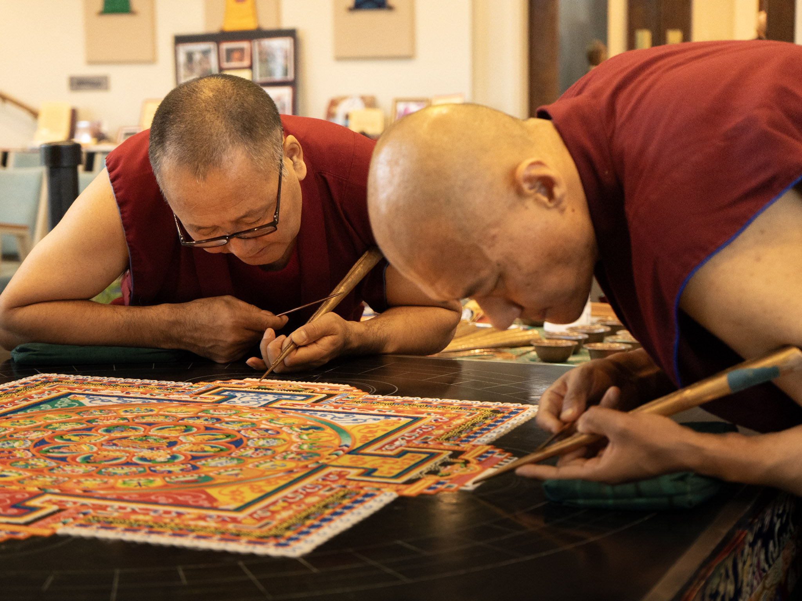
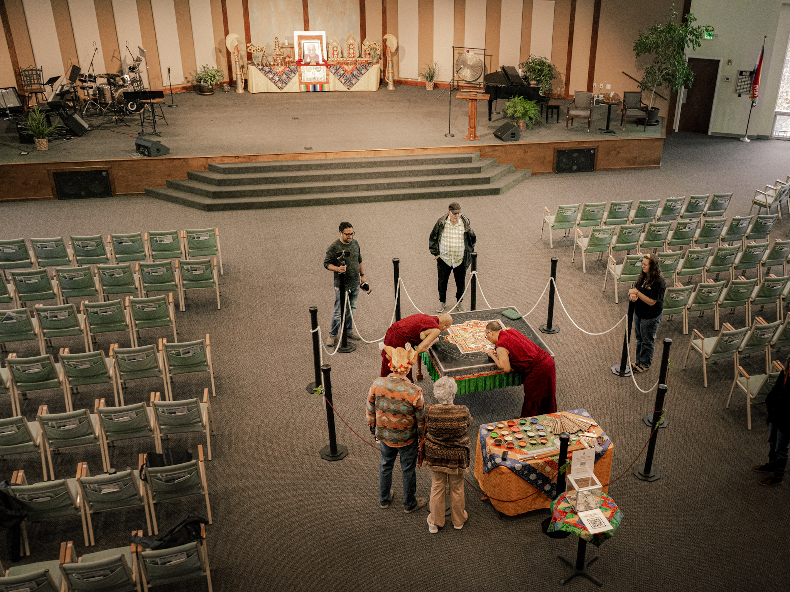
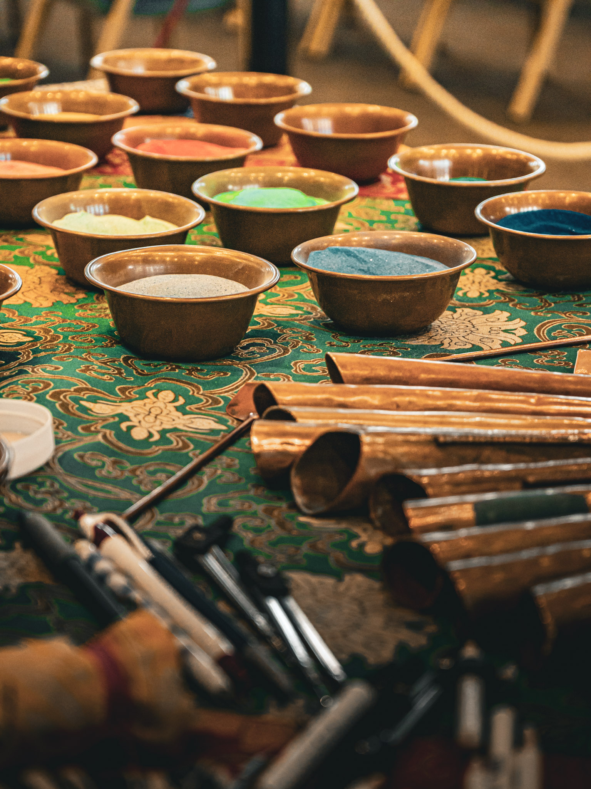
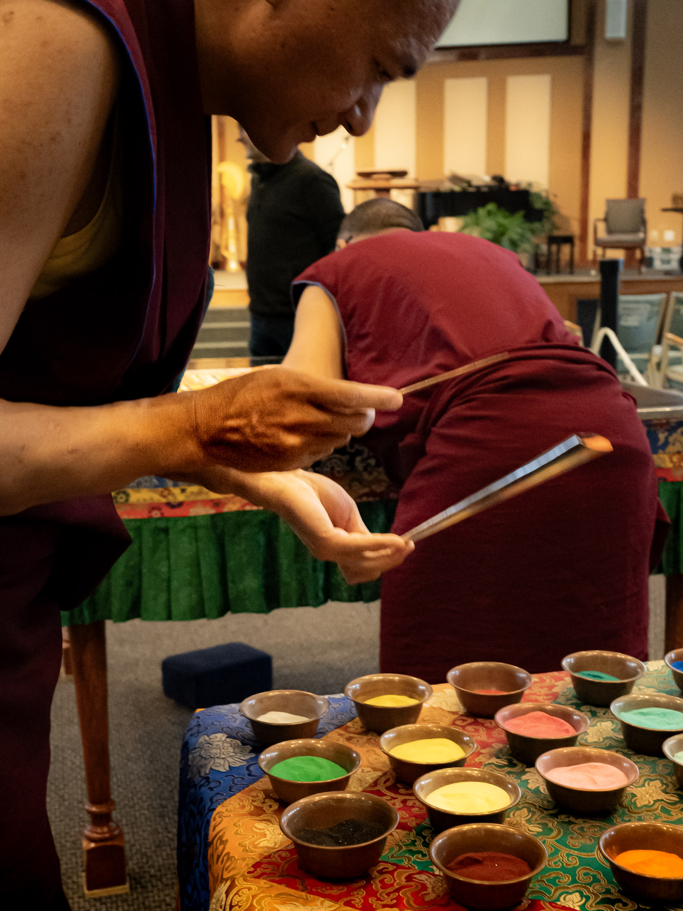
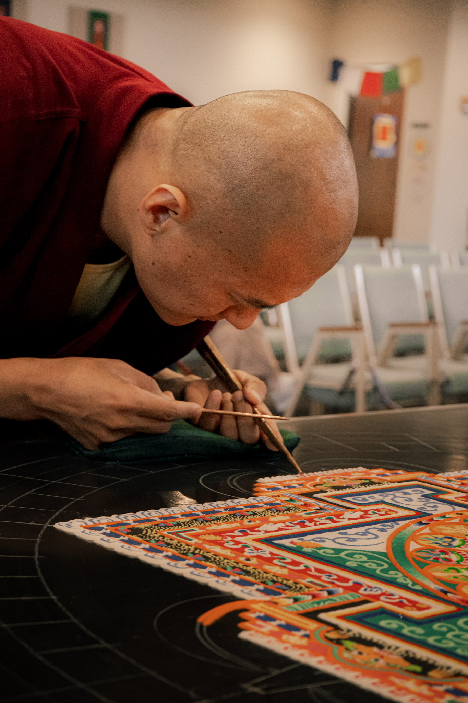
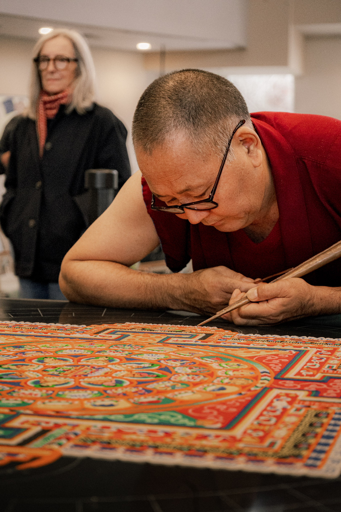
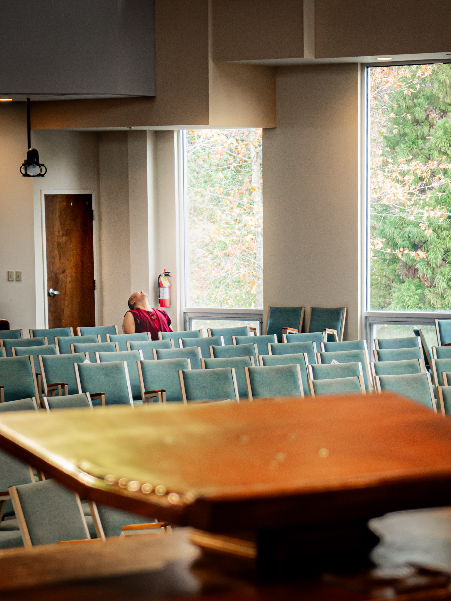

Sand & Spirit
Monks from Drepung Loseling Monastery make a Medicine Buddha sand mandala at Unity North Atlanta.

The sand was going to be swept up. I went home and saved twenty pictures.
From the balcony I could see the whole design. Beside the table I kept looking at the places where the color stopped. You could see where the next color would go.

In Tibetan Buddhist practice, a mandala can be a floor plan for a palace. Circles and squares mark enclosures, walls, and gates. A practitioner can picture the walls rising from the flat design and imagine going through one of the gates.1
The palace taking shape in Marietta was the dwelling of the Medicine Buddha and his assembly. In the Medicine Buddha Sūtra, one of his vows concerns people who are ill and have nowhere to turn for medicine or for someone to look after them.2 It’s a vow about what it’s like to be sick and what you might need from somebody else.




The sweeping is part of the closing ceremony. Drepung Loseling describes it as a way of marking impermanence. Some of the sand is given to people who were there. The rest is released into water, which carries the blessing beyond the room.3
I can see the empty chairs from here. I keep thinking about what it takes to get to one. Time off work. A ride. Somebody who thought to invite you.

Thank you to The Mystical Arts of Tibet and Unity North Atlanta for making room for me and my camera.
Sources
- Edward Henning, “Entering the Mandala,” in The Kālachakra Mandala (2023).
- The Shorter Medicine Buddha Sūtra, §1.14, translated by the Dharmachakra Translation Committee (2021).
- Ulrik Høj Johnsen, Ton Otto, and Cameron David Warner, “Museum of Impermanence,” in Impermanence (2022), pp. 314–317. See also the monastery’s account, “Mandala Sand Painting.”